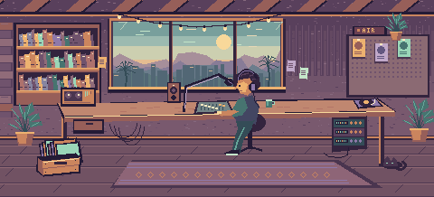
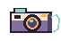

יש לכם רעיון לתוכנית?
האולפן פתוח לסטודנטיות ולסטודנטים שרוצים לשדר, להפיק ולספר סיפור.
bguradio2017@gmail.comלטופס של התחנה
אין תוצאות לחיפוש הזה. אפשר לחפש שם תוכנית, פרק או שדרנית.

האולפן פתוח לסטודנטיות ולסטודנטים שרוצים לשדר, להפיק ולספר סיפור.
bguradio2017@gmail.comלטופס של התחנה